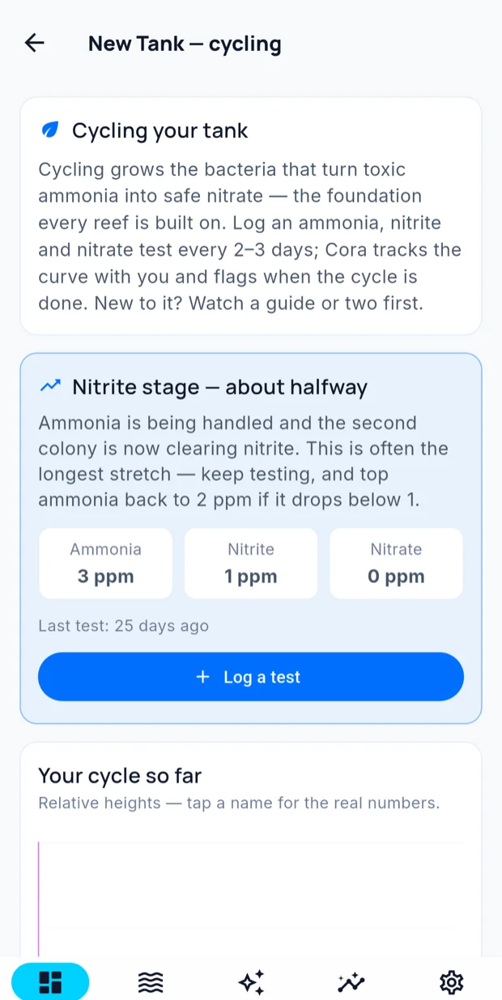

Guided journeys
A journey is Cora walking you through something over days or weeks, rather than answering one question. There are two kinds, and they do not work the same way: cycling a new tank, and working through an issue.
Cycling a new tank
For a tank that is not yet ready for livestock. Cycling grows the bacteria that turn toxic ammonia into safe nitrate, and the journey follows that process through to the end.

Log an ammonia, nitrite and nitrate test every two to three days. Cora places you at a stage from those readings:
| Stage | What is happening |
|---|---|
| Waiting for a first test | Nothing logged yet — the journey cannot place you until it has numbers |
| Not started | Everything near zero with no nitrate yet. Ammonia has not been added, or has not begun converting |
| Ammonia | The first colony is establishing and consuming ammonia |
| Nitrite | The second colony is clearing nitrite. Usually the longest stretch — and the one where people assume something has gone wrong because the numbers stop moving |
| Cycled | Ammonia and nitrite both cleared and nitrate present — ready for livestock |
Your cycle so far plots the three curves together, scaled to each other rather than to absolute values, so you can see the handover from one colony to the next. Tap a name for the real numbers.
Working through an issue
For a problem — nutrients out of range, coral not doing well, something drifting you cannot explain. Cora starts one when it sees a pattern worth pursuing, and you can start one yourself.
An issue journey moves through five stages:
- Validate — is this actually happening? Cora checks your readings before agreeing there is a problem.
- Evidence — gather what is needed. Usually a test, sometimes a photo or an observation.
- Plan — Cora proposes what to do, and why.
- Acting — you do it, over however long it takes.
- Outcome — did it work?
Recording the outcome
At the end you say what happened:
Resolved · Improving · No change · Worse · Stopped
Record the outcome accurately, including Worse. The outcome is stored with the journey, so a similar problem later can be compared against what was tried and what resulted.
Dismissing a journey
If a journey is not useful, dismiss it. It stops appearing and Cora takes the hint.
Written for Cora Max 0.28.36 and Cora Mobile 0.5.54.
Still stuck? Email cora@coraiq.tech and we'll help.